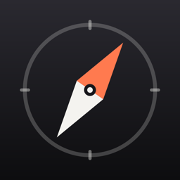

Política de privacidad
Última actualización: 29 de octubre de 2026
Quién es el responsable
Nomad Pocket es una app de código abierto (GPL‑3.0 o posterior) desarrollada por Fran Linde Blázquez. Contacto: fran.linde.blazquez@gmail.com. Esta política cubre la app en iPhone y iPad y, cuando se publique, en Android.
Datos que no recogemos
La app no tiene servidor propio. No recogemos nombre, correo, identificadores del dispositivo, ubicación, historial de uso, diagnósticos ni ningún otro dato. No usamos SDK de analítica, publicidad ni informes de errores de terceros.
Datos que se quedan en tu dispositivo
Para funcionar, la app guarda localmente en tu dispositivo:
- El contenido que descargas (libros y enciclopedias en formato ZIM, mapas, paquetes de navegación y modelos de IA) y un índice de búsqueda de tus mapas, que la app construye a partir de ellos.
- Tu historial de lectura, marcadores, progreso de cursos, lugares guardados en el mapa y ajustes.
- Las conversaciones con el asistente.
- Tu plan de emergencia y tu kit (contactos, puntos de encuentro, números importantes, datos de salud y notas). Solo salen del dispositivo si tú exportas el PDF y lo compartes. Los recordatorios de caducidad son notificaciones locales: no usamos notificaciones push.
Estos datos nunca se envían a nosotros.
Dónde se guardan. En iPhone y iPad, tus datos (ajustes, historial, marcadores, conversaciones, lugares, plan y kit) están en la carpeta Application Support de la app, que no aparece en la app Archivos. El contenido descargado, el índice de búsqueda y los puntos de emergencia están en la carpeta «content» de la app, que sí aparece en Archivos (puedes copiar ahí tus propios archivos ZIM o de mapa). En Android, todo está en el almacenamiento privado de la app.
Cómo borrarlos. En Ajustes puedes borrar cada mapa, país, libro o modelo descargado y vaciar el historial de lectura. El resto se borra donde se muestra: las conversaciones en la lista de conversaciones, los lugares guardados en el mapa, los marcadores en el lector y el plan y el kit en sus pantallas. Si desinstalas la app, se borra todo.
Copias de seguridad. Tus datos (ajustes, plan y kit, historial, marcadores, conversaciones y lugares guardados) pueden incluirse en las copias de seguridad: en iPhone y iPad, las de iCloud o de tu ordenador según cómo las tengas configuradas; en Android, la copia en la nube de Google y la transferencia a un dispositivo nuevo, si las tienes activadas. El contenido descargado (libros, mapas, paquetes de navegación y modelos), el índice de búsqueda y los puntos de emergencia se excluyen en ambas plataformas, porque se pueden volver a descargar. Al restaurar una copia en otro dispositivo, tus datos vuelven pero el contenido no: al abrir la app, lo que ya no tiene archivo se retira de la lista y puedes volver a descargarlo.
Ubicación
Si das permiso, la app usa tu ubicación solo mientras la usas: para mostrar dónde estás en los mapas sin conexión, calcular distancias a lugares y puntos de emergencia y guiarte hasta ellos. La ubicación se procesa en el dispositivo y solo sale de él si tú la compartes con el botón «Compartir mi posición», a quien tú elijas.
Asistente de IA
El asistente funciona íntegramente en tu dispositivo. En iPhone y iPad usa el modelo integrado del sistema (Apple Intelligence, cuando está disponible) o un modelo que descargas y se ejecuta localmente; en Android usa solo modelos descargables que se ejecutan localmente. Tus preguntas, las respuestas y los textos de tu biblioteca que consulta no se envían a ningún servidor. Si usas «Reportar respuesta», la app abre tu app de correo con un mensaje para nosotros que incluye esa respuesta, la versión de la app y el sistema; solo se envía si tú lo envías.
Micrófono y dictado
Si tocas el micrófono del asistente para dictar una pregunta, la app usa el reconocimiento de voz de tu dispositivo en modo sin conexión: el audio se convierte en texto en el propio teléfono, no se guarda y no se envía a ningún servidor (ni nuestro ni de Apple o Google). El botón solo aparece si tu dispositivo puede reconocer tu idioma sin conexión. El micrófono solo se usa mientras dictas, y puedes retirar el permiso cuando quieras en los ajustes del sistema. En Android, si falta el paquete de voz de tu idioma, la app te ofrece descargarlo: esa descarga la hace el propio sistema desde los servidores de Google.
Lector de libros
Las páginas de los archivos que lees se muestran sin acceso a la red: no pueden cargar imágenes, scripts ni otros recursos de internet. Los enlaces a sitios web solo se abren si los tocas y lo confirmas, en tu navegador; a partir de ahí se aplica la política de ese sitio.
Conexiones a servicios de terceros
La app no tiene cuentas ni servidor propio. Se conecta directamente a los servidores públicos de quien publica cada cosa:
- Al abrirla con conexión, y al abrir las pantallas de países, la app consulta en GitHub (propiedad de Microsoft) los catálogos de mapas y paquetes de navegación de este proyecto: archivos pequeños, sin que la app envíe nada tuyo. Aunque no hayas descargado nada, GitHub ve tu dirección IP y cada cuánto abres la app. También sirve los mapas por país, los paquetes de navegación y sus puntos de emergencia, calles y direcciones (generados por este proyecto a partir de OpenStreetMap) cuando decides descargarlos.
- Kiwix: el catálogo (
opds.library.kiwix.org), que recibe el texto que escribes al buscar en «Explorar», sirve las miniaturas e indica la última versión de cada archivo ZIM; y los archivos ZIM (Wikipedia, guías, libros, cursos) desdedownload.kiwix.org, que reparte las descargas entre una red de servidores espejo de terceros. Para descargar más rápido, la app lee la lista de espejos, mide la velocidad de cada uno con una petición pequeña y descarga cada archivo por partes desde varios de ellos a la vez; cada espejo usado ve tu dirección IP. - Protomaps (
build.protomaps.com): solo para recortar en el dispositivo el mapa de un país que todavía no tiene mapa prefabricado en GitHub. - Servidores públicos de Overpass API
(
overpass-api.de,overpass.private.coffeeyoverpass.kumi.systems, todos operados en Europa, en ese orden si uno no responde): solo para obtener puntos de emergencia de OpenStreetMap de un mapa que no los trae incluidos, al instalarlo o al abrir Emergencias con conexión. La petición incluye solo los límites de la región, no tu ubicación. - Hugging Face: los modelos de IA descargables.
Como en cualquier conexión a internet, esos servidores reciben tu dirección IP y la petición, y se rigen por sus propias políticas de privacidad. La app no les envía ningún identificador tuyo ni datos personales. Si la opción «Solo con Wi‑Fi» está activada, las descargas de contenido esperan a una red Wi‑Fi o a que autorices los datos móviles.
Enlaces externos
Los enlaces a sitios web externos se abren en el navegador; a partir de ahí se aplica la política de ese sitio.
Menores
Como no recogemos datos de nadie, tampoco recogemos datos de menores.
Cambios
Si esta política cambia, publicaremos la nueva versión en esta página con su fecha. El código de la app es público en GitHub, así que cualquiera puede comprobar lo que hace.
Privacy policy
Last updated: October 29, 2026
Who is responsible
Nomad Pocket is an open-source app (GPL‑3.0-or-later) developed by Fran Linde Blázquez. Contact: fran.linde.blazquez@gmail.com. This policy covers the app on iPhone and iPad and, once released, on Android.
Data we don't collect
The app has no server of its own. We don't collect your name, email, device identifiers, location, usage history, diagnostics or any other data. We use no third-party analytics, advertising or crash-reporting SDKs.
Data that stays on your device
To work, the app stores locally on your device:
- The content you download (ZIM books and encyclopedias, maps, navigation packs and AI models) and a search index of your maps, which the app builds from them.
- Your reading history, bookmarks, course progress, saved map places and settings.
- Your conversations with the assistant.
- Your emergency plan and kit (contacts, meeting points, important numbers, health details and notes). They only leave the device if you export the PDF and share it. Expiry reminders are local notifications: we don't use push notifications.
This data is never sent to us.
Where it lives. On iPhone and iPad, your data (settings, history, bookmarks, conversations, places, plan and kit) is in the app's Application Support folder, which does not show up in the Files app. Downloaded content, the search index and the emergency points are in the app's “content” folder, which does show up in Files (you can copy your own ZIM or map files there). On Android, everything is in the app's private storage.
How to delete it. In Settings you can delete each downloaded map, country, book or model and clear your reading history. The rest is deleted where it is shown: conversations in the conversations list, saved places on the map, bookmarks in the reader, and the plan and kit on their screens. Uninstalling the app deletes everything.
Backups. Your data (settings, plan and kit, history, bookmarks, conversations and saved places) may be included in backups: on iPhone and iPad, iCloud or computer backups depending on your settings; on Android, Google's cloud backup and the transfer to a new device, if you have them on. Downloaded content (books, maps, navigation packs and models), the search index and the emergency points are excluded on both platforms, because they can be downloaded again. When you restore a backup on another device, your data comes back but the content does not: when the app opens, anything whose file is gone is removed from the list and you can download it again.
Location
If you allow it, the app uses your location only while you use it: to show where you are on offline maps, measure distances to places and emergency points, and guide you to them. Location is processed on the device and only leaves it if you share it with the “Share my position” button, with whoever you choose.
AI assistant
The assistant runs entirely on your device. On iPhone and iPad it uses the system's built-in model (Apple Intelligence, when available) or a model you download that runs locally; on Android it uses downloadable models only, which run locally. Your questions, the answers and the library passages it reads are never sent to any server. If you use “Report answer”, the app opens your mail app with a message to us that includes that answer, the app version and the system; it is only sent if you send it.
Microphone and dictation
If you tap the assistant's microphone to dictate a question, the app uses your device's speech recognition in offline mode: the audio is turned into text on the phone itself, is not stored and is not sent to any server (ours, Apple's or Google's). The button only appears if your device can recognise your language offline. The microphone is used only while you dictate, and you can withdraw the permission at any time in the system settings. On Android, if your language's voice pack is missing, the app offers to download it: the system itself downloads it from Google's servers.
Book reader
The pages of the archives you read are shown with no network access: they cannot load images, scripts or other resources from the internet. Links to websites open only if you tap them and confirm, in your browser; that site's policy applies from there.
Connections to third-party services
The app has no accounts and no server of its own. It connects directly to the public servers of whoever publishes each thing:
- When it opens online, and when you open the country screens, the app checks GitHub (owned by Microsoft) for this project's map and navigation-pack catalogs: small files, with nothing of yours sent by the app. Even if you haven't downloaded anything, GitHub sees your IP address and how often you open the app. It also serves the country maps, navigation packs and their emergency points, streets and addresses (built by this project from OpenStreetMap) when you choose to download them.
- Kiwix: the catalog (
opds.library.kiwix.org), which receives the text you type when searching in “Explore”, serves the thumbnails and tells the newest version of each ZIM file; and the ZIM files (Wikipedia, guides, books, courses) fromdownload.kiwix.org, which spreads downloads over a network of third-party mirror servers. To download faster, the app reads the mirror list, measures each mirror's speed with a small request and downloads every file in parts from several of them at once; each mirror used sees your IP address. - Protomaps (
build.protomaps.com): only to cut, on the device, the map of a country that has no prebuilt map on GitHub yet. - Public Overpass API servers
(
overpass-api.de,overpass.private.coffeeandoverpass.kumi.systems, all run in Europe, tried in that order if one doesn't answer): only to get OpenStreetMap emergency places for a map that doesn't bring them, when you install it or open Emergencias online. The request contains only the region's bounds, not your location. - Hugging Face: downloadable AI models.
As with any internet connection, those servers receive your IP address and the request, and are governed by their own privacy policies. The app sends them no identifiers or personal data about you. If “Wi‑Fi only” is on, content downloads wait for a Wi‑Fi network or for you to allow mobile data.
External links
Links to external websites open in your browser; that site's policy applies from there.
Children
Since we collect no data from anyone, we collect no data from children.
Changes
If this policy changes, we'll publish the new version on this page with its date. The app's source code is public on GitHub, so anyone can verify what it does.